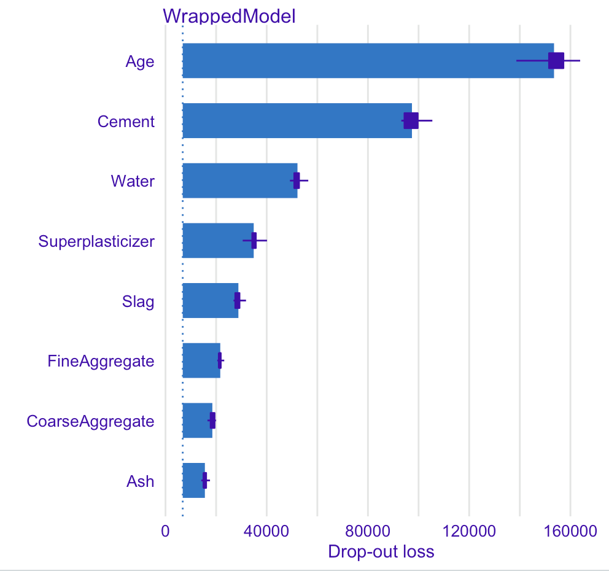
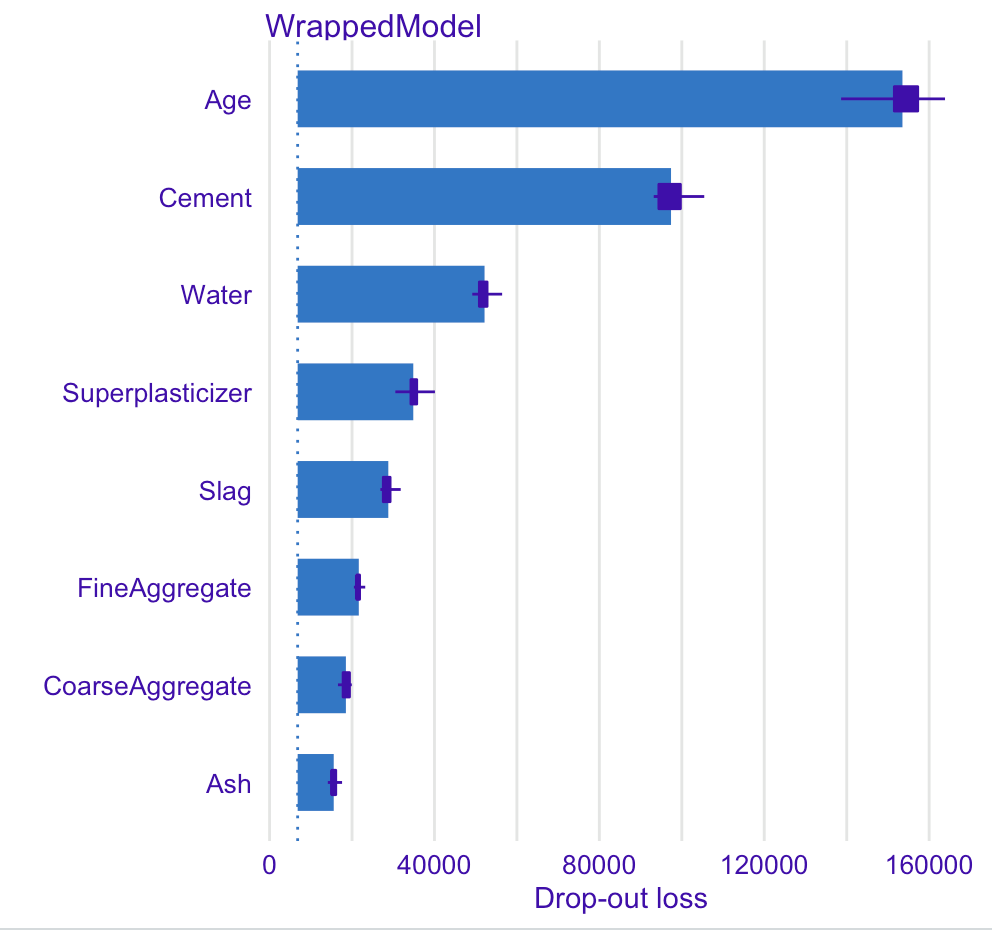
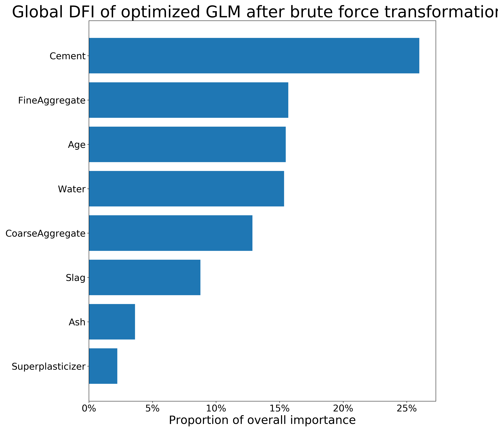
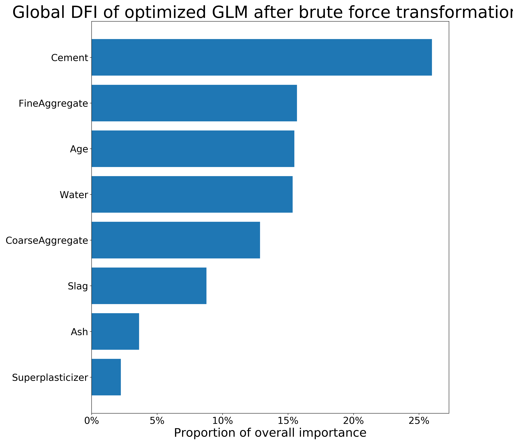

3.5 Interpretable, non-linear feature engineering techniques for linear regression models - exploration on concrete compressive strength dataset with a new feature importance metric.
Authors: Łukasz Brzozowski, Wojciech Kretowicz, Kacper Siemaszko (Warsaw University of Technology)
3.5.1 Abstract
In this article we present and compare a number of interpretable, non-linear feature engineering techniques used to improve linear regression models performance on Cocrete compressive strength dataset. To assert their interpretability, we introduce a new metric for measuring feature importance, which uses derivatives of feature transformations to trace back original features’ impact. As a result, we obtain a thorough comparison of transformation techniques on two black-box models - Random Forest and Support Vector Machine - and three glass-box models - Decision Tree, Elastic Net, and linear regression - with the focus on the linear regression.
3.5.2 Introduction and Motivation
Linear regression is one of the simplest and easiest to interpret of the predictive models. While it has already been thorougly analysed over the years, there remain some unsolved questions. One such question is how to transform the data features in order to maximize the model’s effectiveness in predicting the new data.
An example of a known and widely used approach is the Box-Cox transformation of the target variable, which allows one to improve the model’s performance with minimal increase in computational complexity (Sakia 1992). However, the choice of the predictive features’ transformations is often left to intuition and trial-and-error approach. In the article, we wish to compare various methods of features’ transformations and compare the resulting models’ performances while also their differences in feature importance.
Many black box regression models use various kinds of feature engineering during the training process. Unfortunately, even though the models perform better than the interpretable ones, they do not provide information about the transformations used and non-linear dependencies between variables and the target. The goal we want to achieve is extracting features and non-linearities with understandable transformations of the training dataset.
To measure the improvement of used methods we will compare their performance metrics with black box models’ as a ground truth. This will allow us to effectively measure which method brought the simple linear model closer to the black box. Moreover, we will take under consideration the improvement of black box model performance. Thanks to this, our article will not only present the methods for creating highly performant interpretable models, but also improvement of the results of black box model.
3.5.4 Methodology
The main goal of our research is to compare various methods of transforming the data in order to improve the linear regression’s performance. While we do not aim to derive an explicitly best solution to the problem, we wish to compare some known approaches and propose new ones, simultaneously verifying legitimacy of their usage. The second goal of the research is to compare the achieved models’ performances with black box models to generally compare their effectiveness. An important observation about the linear regression model is that once we transform features in order to improve the model’s performance, it strongly affects its interpretability. We therefore propose a new feature importance measure for linear regression and compare it with the usual methodes where possible.
3.5.4.1 Transformation methods
The four methods of feature transformation compared in the article include:
By-hand-transformations - through a trial-and-error approach we derive feature transformations that allow the linear regression models to yield better results. We use our expertise and experience with previous datasets to get possibly best transformations which are available though such process. They include taking the features to up to third power, taking logarithm, sinus, cosinus or square root of the features.
Brute Force method - this method of data transformation generates huge amount of additional features being transformations of the existing features. We allow taking each feature up to the third power, taking sinus and cosinus of each feature and additionaly a product of each pair of features. The resulting dataset has 69 variables including the target (in comparison with 9 variables in the beginning).
Bayesian Optimization method (Bernd Bischl 2018) - we treat the task of finding optimal data transformation as an optimization problem. We restrict the number of transformations and their type - we create one additional feature for each feature present in the dataset being its \(x\)-th power, where \(x\) is calculated through the process of Bayesian optimization. It allows us to keep the dimension of the dataset relatively small while improving the model’s performance. We allowed the exponents to be chosen from interval \((1, 4]\).
One of our ideas is to use Genetic Programming (GP) to find the best feature transformations. Our goal is to find a set of simple feature transformations (not necessarily unary) that will significantly boost the ordinary linear regression model performance. We will create a set of simple operations such as adding, multiplying, taking a second power, taking logarithm and so on. Each transformation is based only on these operations and specified input variables. Each genetic program tries to minimize MSE of predicting the target, thus trying to save as much information as possible in a single output variable constructed on a subset of all the input features. We will use a variation of the genetic algorithms to create an operation tree minimizing our goal. Before we fit the final model, that is the ordinary linear regression, first we select the variables to transform. The resulting linear regression is calculated on the transformed and selected variables at the very end. To summarize, each operation tree calculates one variable, but this variable may not be included at the end. To avoid strong correlation we decided to use similar trick to the one used in random forest models. Each GP is trained only on some subset of all variables. Bootstraping seems also to be an effective idea, however, we did not implement it. In the case of small number of features in the data, such as in our case, one can consider using all possible subsets of variables of fixed size. Otherwise, they can be chosen on random. This process results in a number of output variables, so we choose the final transformed features using LASSO regression or BIC. This method should find much better solutions without extending dimensionality too much nor generating too complex transformations. The general idea is to automate feature enginnering done traditionally by hand. Another advantage is control of the model’s complexity. We can stimulate how the operation trees are made, e.g. how the operations set looks like. There is also a possibilty of reducing or increasing complexity at will. Modification of this idea is to add a regularization term decreasing survival probability with increasing complexity. At the end, the model could also make a feature selection in the same way - then one of possible operations in the set would be dropping.
3.5.4.2 Feature importance metric
The most natural feature importance metric for linear models such as linear regression and GLM are the absolute values of coefficients. Let \(x_1, \dots, x_n\) denote the features (column vectors) and \(\hat{y}\) denote the prediction. In linear models we have: \[c + \sum_{i=1}^n a_i \cdot x_i = \hat{y}\] where \(c\) is a constant (intercept) and \(a_i\) are the coefficients of regression. Formally, the Feature Importance mesaure value of the \(i-\)th feature (\(FI_i\)) measure is given as: \[FI_i = |a_i|\] We may also notice that: \[FI_i = \Big|\frac{\partial \hat{y_i}}{\partial x_i}\Big|\] We wish to generalize the above equation. Transforming the data in the dataset to improve the model’s performance may be expressed as generating a new dataset, where each column is a function of all the features present in the original dataset. If the newdataset has \(m\) features and the new prediction vector is given as \(\dot{y}\), we then have: \[d + \sum_{i=1}^m b_i \cdot f_i (x_1, \dots, x_n) = \dot{y}\] where \(d\) is the new intercept constant and \(b_i\) are the coefficients of regression. We therefore may use the formula above to derive a new Feature Importance Measure (Derivative Feature Importance, \(DFI\)) as: \[DFI_{i, j} = \Big|\frac{\partial \dot{y_i}}{\partial x_{i, j}}\Big| = \Big|b_i \cdot \sum_{k=1}^m \frac{\partial f_k}{\partial x_{i, j}}\Big|\] The above measure is calculated separately for each observation \(j\) in the dataset. However, due to the additive properties of derivatives, we may calculated Derivative Feature Importance of the \(i\)-th feature as: \[DFI_i = \frac{1}{n}\sum_{j=1}^n DFI_{i, j}\] which is then a global measure of Feature Importance of the \(i\)-th feature.
3.5.4.3 Dataset and model performance evaluation
The research is conducted on Concrete_Data dataset from the OpenML database [link]. The data describes the amount of ingredients in the samples - cement, blast furnace slag, fly ash, water, coarse aggregate and fine aggregate - in kilograms per cubic meter; it also contains the drying time of the samples in days, referred to as age. The target variable of the dataset is the compressive strength of each sample in megapascals (MPa), therefore rendering the task to be regressive. The dataset contains 1030 instances with no missing values. There are also no symbolic features, as we aim to investigate continuous transformations of the data. Due to the fact, that we focus on the linear regression model, the data is reduced prior to training. We remove the outliers and influential observarions based on Cook’s distances and standardized residuals.
We use standard and verified methods to compare results of the models. As the target variable is continuous, we may calculate Mean Square Error (MSE), Mean Absolute Error (MAE), and R-squared measures for each model, which provide us with proper and measurable way to compare the models’ performances. The same measures may be applied to black box models. The most natural measure of feature importance for linear regression are the coefficients’ absolute values after training the model - however, such easily interpretable measures are not available for black-box models. We therefore measure their feature importance with permutational feature importance measure and caluclating drop-out loss, easily applicable to any predictive model and therefore not constraining us to choose from a restricted set. In order to provide unbiased results, we calculate the measures’ values during cross-validation process for each model, using various number of fold to present comparative results.
3.5.5 Results
Note, that the transformations used in results section are only examples of the presented methods and various realisations may result in various final measures’ values. Considerably, the trial-and-error approach may is quite individual and the results may differ depending on the experimentator. This non-automatic method should be treated as something that can be achieved after long time of tries.
3.5.5.1 Models’ performance

FIGURE 3.1: MAE of the models after transformations

FIGURE 3.2: MSE of the models after transformations
The plots presented above show the values of MAE and MSE achieved by each model on the datasets after the mentioned transformations. We may observe that the linear models have significantly reduced their error values after the transformations, while the brute force method yielded best results. However, brute force method generates much more features increasing the resulting dimension of the dataset, thus increasing the time complexity and reducing the interpretability.
The three remaining methods, that is: the Bayesian optimization, the trial-and-error method and the genetic modifications - provided much improvement in comparison with the models’ performance on the plain dataset as well. In this case the final space has much lower dimension. Bayesian optimization results in 16 features, the trial-and-error in 14 features and the genetic modifications result in 8 features, in comparison to 69 features after brute force transformations. All of these methods have very similar quality of predictions, considering both MAE and MSE.
The remaining non-linear white-box model, namely the Decision Tree Regressor, seems to be rather unaffected by any transformations of the dataset. In comparison, both black the boxes: Random Forest and SVM with gaussian kernel, are strongly influenced, though is hard to say when black box’s prediction quality increases and when decreases.
3.5.5.2 Feature Importance comparison
The comparison of Feature Imprortance values will be between permutational Feature Importance calculated on the black-box models - Random Forest and SVM and local and global Derivative Feature Importance calculated on the datasets after brute force transformations and after the Bayesian optimization.
 

FIGURE 3.3: Feature Importance of RFR and SVM
 

FIGURE 3.4: Local and global DFI on the dataset after brute force transformations
FIGURE 3.5: Local and global DFI on the dataset after Bayesian transformations
The figure 3.4 present permutational Feature Importance of the black-box models, and the figures 3.5 and 3.6 present \(DFI\) values - for one observation and calculated globally, respectively. The local \(DFI\) were calculated on the observations nr \(573\) and \(458\). We may notice high resemblance of the black-box Feature Importance to the local \(DFI\) after Brute Force trtansformations, as well as similarities between all the Feature Importance calculations overall. The order of features in \(DFI\) is not precisely equal to the order of feature after permutational Feature Importance of the black-boxes; however, the order still makes sense as far as we can say based on our little knowledge of materials. Moreover, the deviations of Feature Importance measures between various models is quite common in such research.
To summarize, although the deviations between black-box and glass-box models’ Feature Importance are present, we conclude that \(DFI\) may provide a new way of calculating Feature Importance for linear models. Its efficiency shall be further investigated in another research. When it comes the presented comparison, the majority of important variables were detected by the \(DFI\) method.
3.5.6 Summary and conclusions
Each of the four methods leads to significant improvement in Linear Regression. All of them are based on completely different ideas and their effectivenes may vary for different tasks. It needs noting that the presented research is conducted on a dataset containing only numerical variables, so similar research for transformations of categorical variables remains to be yet conducted. However, we have presented numerous ways to transform the dataset improving the linear models while at least partially maintaining its interpretability.
The black box models in this case were unsurpassed, though we achieved highly comparable results. The greatest advatange of white box usage is that every person can understand their mechanics and predictions. Therefore, the presented methods may serve as an efficient solution, when one needs to retain simplicity while also offering an improvement to predictions.
Our new metric - \(DFI\) - can be used to compare simple (differentiable) feature transformations in linear regression. The analytical deduction suggests, that its performance is accurate, but it shall be investigated further before being applied in general.
In the end, the obtained results are satisfying and should encourage to put more effort into research about new transformation methods and interpretability metrics. The next thing to do is putting more effort into researching the new \(DFI\) metric, to improve interpretability of the extended regression models. We hope that our article will inspire a number of interested readers to conduct such research.
References
Bernd Bischl, Jakob Bossek, Jakob Richter. 2018. “MlrMBO: A Modular Framework for Model-Based Optimization of Expensive Black-Box Functions,” 23. https://arxiv.org/abs/1703.03373.
Melo], Vinícius [Veloso de, and Wolfgang Banzhaf. 2018. “Automatic Feature Engineering for Regression Models with Machine Learning: An Evolutionary Computation and Statistics Hybrid.” Information Sciences 430-431: 287–313. https://doi.org/https://doi.org/10.1016/j.ins.2017.11.041.
Patricia Arroba, Marina Zapater, José L. Risco-Martín. 2015. “Enhancing Regression Models for Complex Systems Using Evolutionary Techniques for Feature Engineering.” Journal of Grid Computing 13: 409–23. https://doi.org/10.1007/s10723-014-9313-8.
Sakia, R. M. 1992. “The Box-Cox Transformation Technique: A Review.” Journal of the Royal Statistical Society. Series D (the Statistician) 41 (2): 169–78. http://www.jstor.org/stable/2348250.